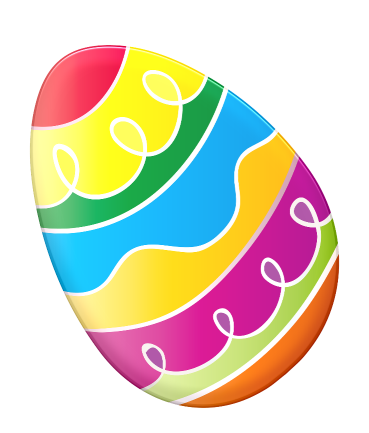

Osterbräuche in Deutschland
Wenn
wir ans Osterfest denken, fallen uns natürlich zahlreiche Traditionen
und Bräuche ein, die wir zu dieser Zeit besonders oft zelebrieren. Doch
woher stammen die gängigsten Osterbräuche, die wir heute kennen – und
welche Bedeutung haben sie?
Wie
auch zu Weihnachten wird auch das Osterfest seit Jahrzehnten von
Bräuchen und Traditionen geprägt. Viele stammen dabei aus dem
Christentum, da Ostern das wichtigste Fest für Christen darstellt, um
die Auferstehung Jesu zu feiern. Außerdem endet für viele Menschen mit
dem Osterfest die Fastenzeit.
Halte
Ausschau nach den 3 versteckten Ostereiern auf der Map. Sie erzählen
Dir von den Osterbräuchen in Deutschland und eines davon hält einen
wertvollen Hinweis für das Gewinnspiel bereit.
